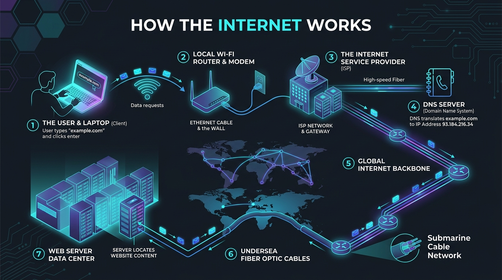
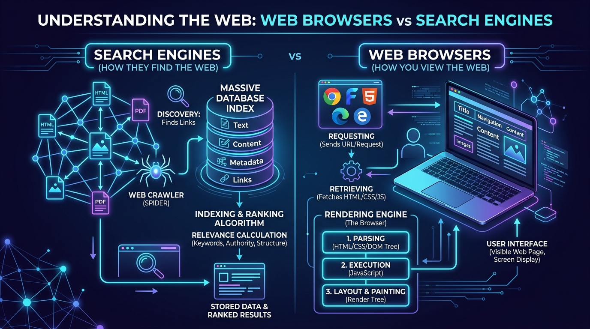

Connecting the Planet: The Internet, Protocols & Web Technologies
The Internet connects billions of computers through shared protocols, physical infrastructure, and open standards. This guide explores how the web works, the TCP/IP protocol stack, and the technologies that help people communicate and find information online.
An in-depth academic synthesis authored in my own words by Mekhi Childs (Caldwell University), exploring how data flows across the global network, the critical role of service providers, how client-side browsers render code, and how search engines index the modern web.
Topic 01
How the Internet Works
Decentralized Networking & Packet Switching
In my own words, the Internet is a vast, decentralized global network of billions of interconnected computers, smartphones, servers, and smart devices that communicate with one another using universal standardized communication rules known as the Internet Protocol Suite (TCP/IP). Many people mistakenly visualize the Internet as a single massive central computer or a magical wireless cloud floating overhead. In reality, the Internet is a physical and logical cooperative mesh. No single government, corporation, or entity owns it; instead, it thrives on an open architecture coordinated by international standards organizations such as the Internet Engineering Task Force (IETF) and ICANN.
The secret to how the Internet operates reliably is a concept called packet switching. When I sit at my computer at Caldwell University and send an email or request a webpage, my computer does not transmit the entire file as one unbroken stream of data. If it did, a single hiccup on the wire would ruin the entire transfer, and one user would monopolize the connection. Instead, my computer slices the message into thousands of tiny digital chunks called data packets. Each individual packet is stamped with a digital header containing the sender's Source IP address, the receiver's Destination IP address, and an exact sequence number.
These packets are handed off from my device through my local Wi-Fi router to my Internet Service Provider. From there, high-speed specialized computers called routers inspect the destination address on each packet and forward it along the fastest available path. Because routers adapt in real time to network congestion or broken cables, different packets from the exact same image or webpage can take completely different physical pathways—some traveling through regional terrestrial fiber lines and others darting through deep submarine cables resting on the ocean floor. Once every packet reaches the destination server, the receiving computer uses the sequence numbers to verify that none were lost and reassembles them back into the original complete file.

Figure 1: Visualizing How the Internet Works — A step-by-step diagram showing data requests traveling from a client laptop through a local Wi-Fi router and modem, entering the ISP network gateway, resolving via DNS, traversing the global backbone and deep-sea submarine fiber-optic cables, and arriving at remote web server data centers.
Key Student Takeaway:
The Internet works because of decentralized collaboration. By breaking data into packets and routing them dynamically across an interconnected web of fiber optics and routers, the system is naturally self-healing and resistant to single points of failure.
Topic 02
Internet Service Providers (ISPs)
Commercial Gateways & Network Hierarchy
In my own words, an Internet Service Provider (ISP) is the company or organization that supplies the critical commercial bridge connecting our homes, schools, and offices to the rest of the worldwide Internet. Everyday individuals cannot personally lay thousands of miles of transatlantic fiber-optic cables or install multi-million dollar optical routers. Instead, we subscribe to an ISP—such as Comcast Xfinity, Verizon Fios, AT&T, or Spectrum—which owns or leases the telecommunications infrastructure that links our local devices to the global network.
The Internet is structured in a three-tier hierarchy of service providers:
Tier 3 ISPs (Local/Consumer Providers): These are the local access providers that run cables directly to our houses, campus dorms, and mobile phones (fiber, coaxial cable, DSL, or cellular 5G). They purchase upstream internet connectivity from higher tiers.
Tier 2 ISPs (Regional Providers): Larger regional networks that connect multiple Tier 3 providers together and peer with other networks to exchange regional traffic.
Tier 1 ISPs (Global Backbone Carriers): The giants of cyberspace (such as Lumen, AT&T, and Telia Carrier). They own the transcontinental fiber backbones and undersea cables. Crucially, Tier 1 providers participate in "settlement-free peering," routing packets between each other without charging transit fees because their traffic exchanges are balanced.
When my router connects to my ISP, the provider dynamically assigns my household a public IP address through DHCP (Dynamic Host Configuration Protocol). The ISP acts as a gatekeeper, managing download/upload bandwidth, directing DNS queries, and routing packets toward the nearest Internet Exchange Point (IXP).
The Federal Communications Commission (FCC) oversees communications policy in the United States. Public policy debates about Net Neutrality consider whether ISPs should be allowed to throttle specific websites or should treat packet traffic equally without paid fast lanes.
Key Student Takeaway:
ISPs are the on-ramps to the digital world. They provide physical connectivity, assign IP addresses, manage bandwidth, and route data between local devices and the wider Internet.
Topic 03
Web Browsers
Client-Side Translators & Rendering Engines
In my own words, a web browser is a client application software program installed on our computers, tablets, or phones that allows humans to locate, retrieve, interpret, and visually interact with content on the World Wide Web. Many everyday computer users confuse the browser with the Internet itself or mistake it for Google, but the browser is actually the viewing tool or interpreter. Without a web browser, a webpage is just an unreadable jumble of raw code and text files sitting on a distant server.
When I enter an address into a browser like Google Chrome, Apple Safari, Mozilla Firefox, or Microsoft Edge, the browser executes a complex multi-step pipeline documented by the Mozilla Developer Network (MDN) Web Docs:
1. Fetching (HTTP/HTTPS)
The browser contacts the remote server using HTTP or encrypted HTTPS protocols, negotiates TLS encryption, and downloads HTML, CSS stylesheets, images, and JavaScript script files.
2. Parsing & The DOM Tree
The browser's layout engine parses the raw HTML tags into an internal hierarchical object tree called the Document Object Model (DOM) and blends it with CSS rules to determine styling.
3. Layout, Scripting & Painting
A JavaScript engine (such as Google V8 or Apple JavaScriptCore) executes dynamic page logic, calculates exact pixel coordinates on the display, and paints buttons, text, and graphics onto the screen.
Web browsers also perform critical cybersecurity functions. Modern browsers enforce sandboxing, isolating each open tab into an independent operating system process so malicious code on one compromised site cannot read banking passwords or inject malware into other tabs. Browsers also inspect digital SSL certificates, warn users about phishing and malicious domains, manage secure browser cookies, store local cache files to speed up repeat visits, and offer private browsing modes (such as Chrome Incognito) that prevent local browsing history and temporary cookies from saving to the machine.
Key Student Takeaway:
A browser is not the Internet; it is the software vehicle you drive to navigate the web. Its rendering engine transforms raw text files into interactive visual experiences while enforcing vital security sandboxes.
Topic 04
Search Engines
Information Retrieval & Algorithmic Indexing
In my own words, a search engine is a massive, automated web-based information retrieval system designed to help users discover, filter, and access relevant content across billions of public webpages on the World Wide Web. While a web browser is the software program you launch on your computer, a search engine (such as Google, Microsoft Bing, or privacy-oriented DuckDuckGo) is a specialized cloud platform you visit whenever you need to find information, but do not already know the exact URL.
A common misconception is that a search engine searches the live, active Internet at the exact second you type your query. If it tried to query every server across the planet live, a single search would take hours. Instead, as explained in the Google Search Central Guide on How Search Works, search engines search their own colossal, pre-built database index using three primary stages:
1. Web Crawling (Spiders & Bots): Search engines deploy automated programs called crawlers or spiders (like Googlebot) that explore the web 24/7. They start with a known list of trusted websites and continuously follow every hyperlink on those pages to discover newly published pages, updated articles, or deleted links.
2. Indexing: When a crawler discovers a page, the search engine analyzes its contents—extracting headlines, body text, image descriptions, page titles, and structured metadata. It catalogs this data into a gigantic distributed database known as the Search Index, functioning like an index at the back of a trillion-page textbook.
3. Ranking & Serving Results: When a user enters a query, complex mathematical algorithms evaluate hundreds of ranking signals in milliseconds. These include keyword relevance, domain trustworthiness, high-quality backlinks from other respected sites, mobile responsiveness, page loading speed, and user intent. The algorithm then ranks the best matches and serves them on the Search Engine Results Page (SERP).

Figure 2: Understanding the Web — Search Engines (How They Discover Content via Web Crawlers, Build Database Indexes & Calculate Ranking Algorithms) vs. Web Browsers (How They Request Web Files, Parse the DOM & Paint Interactive User Interfaces).
Key Student Takeaway:
Search engines are the navigational compass of the World Wide Web. By crawling hyperlinks, indexing billions of documents into searchable databases, and applying relevance algorithms, they make the overwhelming sea of digital information orderly and accessible.
Interactive AI Assistant • Course Project Part 2
Part 2: AI Chatbot
Type any question below to have a live conversation with NetBot AI. Ask about how the Internet works, ISPs, web browsers, search engines, cybersecurity, or network protocols and receive instant AI-generated answers.
🤖
NetBot AI Active
Internet & Technology Assistant • Caldwell University
💡 Suggested Questions (Click any prompt to ask):
🤖
Hello and welcome! I am NetBot AI, your interactive Internet Technologies tutor created for Mekhi Childs' Digital Portfolio at Caldwell University.
I'm here to answer your questions about:
How the Internet Works (Packets, routing, undersea cables)
Internet Service Providers (ISPs) (Tiers, DHCP, bandwidth)
Web Browsers (Rendering engines, DOM tree, security)
Network Protocols (TCP/IP, DNS, and packet routing)
Feel free to type your own question below or click any suggestion chip above to begin our conversation!
Just now
Press Enter to send • AI generates real-time answers● Ready
Interactive AI Assistant • Course Project Part 3
Part 3: AI Digital Person
Upload a photo to create a personalized AI avatar, then chat with your digital person and ask questions just like Part 2. Avatar creation sends your photo to OpenAI for image editing; your digital person uses the Part 2 networking Q&A assistant to answer questions.
Create Your Digital Person
Choose a photo and a visual style. Your photo is sent securely to OpenAI through this site's server function to create the avatar.
JPG, PNG, or WEBP • Up to 10 MB. Use a photo you have permission to share.
Choose a photo to get started.
👤
Your generated digital person will appear here.
👤
Your Digital Person Ready
Personalized AI Avatar • Tech Q&A Assistant
💡 Ask your digital person:
👤
Hello! Upload a photo and generate your digital person above, then talk to me about any tech topic: AI, security, the cloud, gadgets, coding, networks, or just chat.
Just now
Press Enter to chat • Your photo is only sent when you generate an avatar● Ready
Core Foundations
Essential Questions of The Internet
Explore the foundational definitions, structural mechanisms, governance realities, and architectural principles that keep billions of devices connected across the globe.
Core Question 01🌐
What is the Internet and who owns it?
Key Definition: The Internet is a globally decentralized network of interconnected computer networks that communicate using the standardized Internet Protocol Suite (TCP/IP). No single government, corporation, or entity owns the Internet.
The Internet originated in 1969 as ARPANET, funded by the U.S. Department of Defense's Advanced Research Projects Agency (DARPA). Its core architectural philosophy was decentralized resilience: if any individual transmission line or computer node were disabled in an attack, traffic would automatically reroute around the outage.
Essential Dimensions of Internet Ownership & Governance:
No Centralized Sovereign: Ownership is distributed among thousands of independent entities: universities, telecommunications carriers, cloud providers, and governments that operate their own Autonomous Systems (ASNs).
ICANN (Internet Corporation for Assigned Names & Numbers): Coordinates the global Domain Name System (DNS), root server operations, and IP address allocation to ensure every address is unique.
IETF (Internet Engineering Task Force): Open volunteer engineering community that authors Requests for Comments (RFCs)—the technical standards that define protocols like HTTP, TCP, and TLS.
W3C (World Wide Web Consortium): Standards body founded by Tim Berners-Lee that standardizes HTML, CSS, and web accessibility standards.
Decentralized MeshARPANETICANNIETF RFCs
Core Question 02🕸️
What is the difference between the Internet and the Web?
Key Definition: The Internet is the physical and logical networking infrastructure (cables, routers, servers, and IP protocols); the World Wide Web (WWW) is an application service that operates on top of the Internet using HTTP and hyperlinks.
While commonly used interchangeably in colloquial conversation, the Internet and the World Wide Web represent two completely distinct technological layers:
The Highway vs. Vehicle Analogy:
The Internet (The Highway System): Think of the Internet as the global highway system—the physical concrete roads, bridges, fiber-optic lines, undersea cables, and traffic routing signs (IP addresses).
The Web (One Type of Vehicle): The World Wide Web is like delivery trucks driving along that highway carrying websites, HTML documents, and browser media via HTTP/HTTPS.
Other Services Sharing the Highway: Many massive Internet services do not run on the Web: direct email protocols (SMTP/IMAP), file transfers (SFTP/SSH), online gaming packets (UDP), voice calling (VoIP/SIP), and streaming protocols.
Different Inventors: The Internet's foundational protocols were engineered by Vint Cerf and Bob Kahn in the 1970s; the World Wide Web was invented later in 1989 by Sir Tim Berners-Lee at CERN.
Internet vs. WebTim Berners-LeeVint Cerf & Bob KahnApplication Layer
Core Question 03📦
How does packet switching make the Internet resilient?
Key Definition: Packet switching breaks digital files, video streams, and messages into discrete chunks called packets (datagrams), labels each with source/destination addresses and sequence numbers, and routes them dynamically across different physical paths.
Prior to packet switching, communications used circuit switching (such as traditional landline telephone networks), where a continuous, dedicated physical wire circuit had to stay open for the entire duration of a call. If that single line broke, the call instantly dropped.
Why Packet Switching Revolutionized Global Networking:
Dynamic Multi-Path Routing: When you send a 5 MB photo, it is sliced into thousands of packets. Packet 1 might cross an undersea cable via New York, while Packet 2 crosses via London, based on real-time router congestion.
Fault Tolerance & Self-Healing: If a transatlantic fiber cable is accidentally severed by an anchor, Border Gateway Protocol (BGP) routers automatically divert remaining packets along alternate continental fibers without user intervention.
Maximized Bandwidth Efficiency: Lines are not tied up idling during pauses in conversation. Packets from millions of users interleave across the same shared high-capacity backbone lines simultaneously.
Assembly at Destination: The Transport Layer (TCP) on the recipient's computer checks sequence numbers, requests retransmission for any dropped packets, and reassembles the complete file seamlessly.
How do IP addresses and the Domain Name System (DNS) work?
Key Definition: An IP address is a unique numerical address assigned to every device on a network; the Domain Name System (DNS) is the "phonebook of the Internet" that translates human-readable names (e.g., caldwell.edu) into machine-routable IP addresses.
Computers communicate using numbers, not English words. Whenever you enter a website name, your computer cannot send a single packet until DNS resolves that domain name to an exact IP address.
IPv4 vs. IPv6 and Hierarchical DNS Resolution:
IPv4 (32-bit): Uses four sets of 8-bit numbers (e.g., 198.51.100.24). Yields approximately 4.3 billion addresses—which the modern world exhausted in the 2010s due to smartphones, tablets, and IoT devices.
IPv6 (128-bit): Uses eight hexadecimal blocks (e.g., 2001:0db8:85a3::8a2e:0370:7334), providing \(3.4 \times 10^{38}\) unique addresses—enough to assign trillions of addresses to every atom on Earth.
DNS Hierarchy: Lookups travel from Local Resolver → 13 Named Root Server Clusters (.) → Top-Level Domain (TLD) Nameservers (.edu) → Authoritative Nameservers for the specific domain.
TTL & Caching: To avoid querying root servers for every single webpage click, DNS records are cached locally with a Time-To-Live (TTL) expiration value.
DNS ResolutionIPv4 ExhaustionIPv6 128-bitRoot Servers
Physical & Logical Blueprint
The Physical Infrastructure of Cyberspace
The "Cloud" is not an ethereal mist in the sky—it consists of hundreds of thousands of miles of deep-sea cables, massive Tier 1 carrier exchange centers, and hyper-scale data centers.
🌊
Submarine Undersea Cables
Physical Backbone
Over 99% of all transcontinental Internet traffic travels through fiber-optic cables resting on the ocean floor—not satellites. More than 550 active submarine cables span over 1.4 million kilometers across the globe.
Speed of Light in Glass: Data travels as laser light pulses reflected inside glass hair-thin strands, crossing the Atlantic Ocean in approximately 60 milliseconds.
Armored Protection: Near coastlines, cables are armored with heavy steel wire wraps and buried under seabed trenches to protect against commercial fishing trawlers and ship anchors.
Geopolitical Risk: Subsea cable choke points (like the Red Sea, Strait of Malacca, and English Channel) present critical national security vulnerabilities subject to sabotage and undersea repair missions.
🏢
Tier 1 Backbones & IXPs
Routing Hierarchy
Internet Service Providers are organized hierarchically. At the very top are Tier 1 Carriers (e.g., Lumen, AT&T, Verizon, Telia Carrier) that own global transit backbones and route traffic to one another without paying fees.
Internet Exchange Points (IXPs): Physical data center hubs (e.g., Equinix in Ashburn, VA; DE-CIX in Frankfurt) where major ISPs and content providers (Google, Netflix) directly exchange traffic ("peering").
Autonomous Systems (ASNs): The Internet consists of over 100,000 Autonomous Systems—independent routing domains that announce available IP address blocks to peers via Border Gateway Protocol (BGP).
Tier 2 & Tier 3 ISPs: Regional and consumer providers (Comcast, Charter) pay Tier 1 carriers for upstream "transit" to reach the rest of the world.
☁️
Client-Server & Cloud Compute
Logical Topologies
The Internet supports two primary logical communication models: the centralized Client-Server model and the decentralized Peer-to-Peer (P2P) model.
Client-Server: End-user client devices (laptops, phones) initiate requests; dedicated centralized servers (or cloud clusters) respond with data and authentication.
Peer-to-Peer (P2P): Every connected node acts as both a client and a server (e.g., BitTorrent, blockchain networks), sharing files directly without a central single point of failure.
Content Delivery Networks (CDNs): Distributed server caches (Cloudflare, Akamai) placed at the edge of ISP networks so media loads locally in milliseconds rather than querying an origin server across the world.
Interactive Learning Tool
Anatomy of a Uniform Resource Locator (URL)
👉 Click any colored segment below to inspect its role
Specifies Hypertext Transfer Protocol Secure. Indicates that communication between the browser and server is encrypted end-to-end via Transport Layer Security (TLS 1.3), guarding credentials, cookies, and traffic against interception by third parties on public Wi-Fi or compromised routers.
Standardized Communications
The Protocol Stack: TCP/IP Suite
Network communications are organized into modular architectural layers. Each layer handles a distinct responsibility, encapsulating data with headers before passing it down to the physical medium.
Layer 4 (TCP/IP)
Application Layer
OSI Model: Layers 5, 6 & 7 (Session, Presentation, Application)
Directly interfaces with software applications and human users. Formats data, handles authentication, and defines how browsers, email clients, and file transfer programs request and display resources.
Manages host-to-host end-to-end communication, segmentation, flow control, and port multiplexing. Crucially dictates whether communication prioritizes guaranteed reliability or minimum latency:
TCP (Transmission Control Protocol):
Connection-oriented. Uses a 3-Way Handshake (SYN → SYN-ACK → ACK). Guarantees every packet arrives in order with zero loss via ACKs and automated retransmission. Essential for web browsing (HTTP), banking, email, and files.
UDP (User Datagram Protocol):
Connectionless and lightweight. "Fire and forget" with no handshakes or retransmission overhead. Dropped packets are ignored. Essential for live video streaming (Zoom, Twitch), online multiplayer gaming, and fast DNS queries.
Packages transport segments into network datagrams (packets), assigns logical source and destination IP addresses, and routes packets across heterogeneous intermediate routers to their ultimate destination across the globe.
Translates logical binary packets into physical electrical signals, light pulses, or radio waves. Coordinates local physical media access between adjacent network nodes on the same local area network (LAN) using permanent 48-bit Media Access Control (MAC) addresses.
Ethernet (IEEE 802.3) Twisted-pair copperWi-Fi (IEEE 802.11 ax/be) Radio spectrumFiber Optics Infrared laser pulsesCellular (4G LTE / 5G NR)ARP (Address Resolution: IP → MAC mapping)
Generational Shifts
The Evolution of the Web & Digital Ecosystem
From static read-only hypertext pages in the early 1990s to participatory social platforms, decentralized protocols, and the hidden layers of cyberspace.
1991 – 2004
Web 1.0: Read-Only
The Informational Web
Static Content: Websites were flat HTML files hosted on web servers with minimal interactivity or dynamic styling.
One-Way Consumption: Users were passive readers consuming content created by webmasters. No comments, likes, or user profiles.
Early Technology: Dial-up modems (56k), GeoCities, Yahoo! directory portal, Netscape Navigator, Internet Explorer 5.
Infrastructure: On-premises physical servers with static IP addresses and slow download speeds.
2004 – Present
Web 2.0: Read-Write
The Social & Mobile Web
User-Generated Content: Anyone can publish instantly—social networks, blogs, video streaming, collaborative wikis.
Rich Dynamic Applications: JavaScript, AJAX, APIs, and Single-Page Applications (SPAs) deliver desktop-grade web software.
Cloud & Mobile Revolution: Smartphones, 4G/5G, and hyper-scale clouds (AWS, Google Cloud, Azure) power always-on services.
Data Monopolization: Centralized platforms monetize user attention, engagement algorithms, and targeted behavioral ads.
Semantic Machine Understanding: Linked open data formats and ontologies allow machines to comprehend meaning, not just text strings.
Autonomous AI Agents: Intelligent LLM agents navigate networks, negotiate APIs, synthesize data, and execute complex workflows.
Edge Computing: Computational intelligence shifts from central mega-servers to local smart devices, decreasing latency and preserving privacy.
Digital Visibility
Surface Web, Deep Web & Dark Web
Search engines index only the visible tip of the digital ocean. The vast majority of online data is intentionally unindexed or cryptographically concealed.
Visible Layer
The Surface Web
Estimated ~4% to 10% of total web
Public webpages crawled and indexed by standard search engines like Google, Bing, and DuckDuckGo. Accessible to anyone with a standard browser without authentication credentials.
Public university homepages (e.g., caldwell.edu)
News outlets (BBC, NYTimes, Wikipedia articles)
Open e-commerce product catalogs and public blogs
Unindexed Private Layer
The Deep Web
Estimated ~90% to 95% of total web
Entirely legitimate, private content shielded behind authentication paywalls, logins, form queries, or database protections that automated search engine bots cannot index.
Online banking, financial ledgers, and billing portals
Private medical records (HIPAA-protected electronic health records)
Corporate intranets, private Google Drives, internal emails
Encrypted Overlay
The Dark Web
Estimated <1% of total web
Encrypted overlay networks requiring specialized routing software (such as Tor or I2P) using onion routing. Conceals users' and host servers' physical IP addresses through layered encryption relays.
Legitimate Uses: Whistleblowers (SecureDrop), journalists evading censorship, human rights advocates in totalitarian regimes.
Experience what happens in milliseconds when you request a webpage. Select a domain or type a custom address to watch the packet pipeline execute in real time.
Preset Targets:
STEP 1
💻
Browser Cache
STEP 2
📡
Resolver (1.1.1.1)
STEP 3
🌐
Root & TLD Server
STEP 4
🏷️
Authoritative DNS
STEP 5
🤝
TCP Handshake
STEP 6
🔒
TLS 1.3 Handshake
STEP 7
🚀
HTTP/2 200 OK
network_socket_tracer — packet_capture.log
STATUS: READY
Simulator initialized. Choose a domain and click "Simulate Web Request" or "Step Forward" to watch packet resolution.
Resolved IPv4
--.--.--.--
Round-Trip Latency
-- ms
Transport Protocol
None
Negotiated Cipher
None
Interactive Assessment
Test Your Networking & Cyber Knowledge
Answer the 5 scenario questions below to evaluate your understanding of Internet architecture and network protocols.
-- / 10
Assessment Result
Your evaluation and recommendations will appear here.
Practical Hardening
Network Hygiene & Protocol Hardening Checklist
Click any checklist item below to mark it completed as you audit your network connections, DNS resolution privacy, and Wi-Fi security.
✅ Essential Network Security Checklist
✓Enforce HTTPS Everywhere: Ensure all web connections use TLS 1.3 encryption with verified SSL certificates before entering credentials.
✓Enable DNS-over-HTTPS (DoH): Configure your browser to use encrypted DNS resolvers (Cloudflare 1.1.1.1 or Quad9) to prevent ISP browsing snooping.
✓Secure Home Wi-Fi: Use WPA3 or WPA2-AES encryption, disable WPS pin pairing, and change default router administrative passwords.
✓Use Trusted VPN on Public Hotspots: Encrypt your connection through a secure tunnel when connecting to unverified cafe, hotel, or airport Wi-Fi.
✓Inspect URLs for Homograph Spoofing: Carefully verify domain spellings against typosquatting phishing clones before logging into university portals.
✓Audit Router Firmware: Regularly install router security patches to shield personal IoT devices from Mirai botnet exploits.
⚡ Coursework Synthesis: The Connected World
"Understanding the Internet goes far beyond using apps—it requires comprehending the decentralized physics of light traveling through deep-sea fiber cables, the mathematical elegance of packet switching, the delicate balance between security and open communication, and the constitutional principles that protect privacy in the digital age. Technical literacy is the foundation of modern justice and civic empowerment."
Mekhi Childs — Undergraduate Student Introduction to Technology • Caldwell University